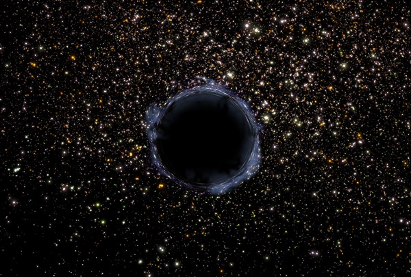
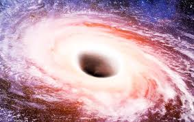
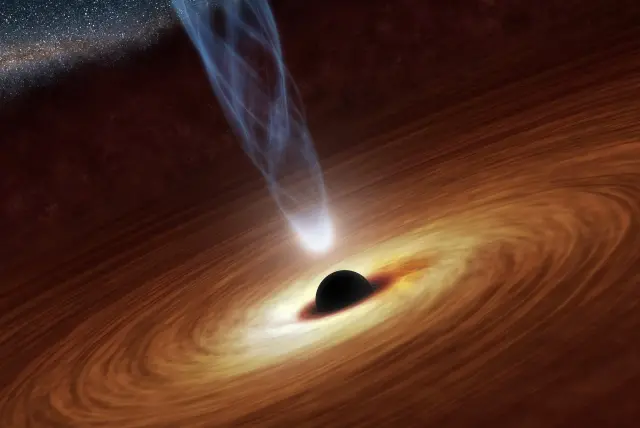

TYPES
There are 4 types of black holes out there!
Primordial | Stellar | Intermediate | SuperMassive
PRIMORDIAL BLACK HOLES

Primordial black holes are possibly the oldest known object in the universe. Scientists believe that they were born in the Big Bang, when the whole Universe started.
They are also really, really tiny! About the size of a Proton! And yet they weigh as much as a big mountain! (not metaphorically speaking)
STELLAR BLACK HOLES

Stellar black holes are the densest type of black holes. It would be like squishing three Suns into the size of a city!
They are also the most abundant type of Black holes in our Universe!
INTERMEDIATE BLACK HOLES

Intermediate black holes are mysterious. Scientists don't really know if they exist.
But if they do, their size is in between a Stellar and Supermassive.
SUPERMASSIVE BLACK HOLES

SuperMassive black holes are MONSTROUSLY gigantic.
SuperMassive black holes are the largest types of black holes and can be found in the centers of most galaxies.